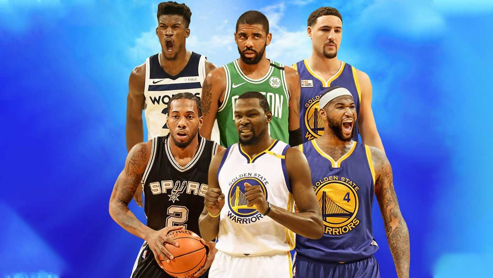

NBA TRENDS by: Nana and Nathaniel
News
NBA Offseason: Kawhi Leonard, and Paul George to Clippers, Russel Westbrook to the Rockets, Chris Paul to the Thunder, Kevin Durant, and Kyrie Irving to Nets, Kemba Walker to Celtics, DeMarcus Cousins and Anthony Davis to Lakers, Klay Thompson re-signs to the Warriors, Jimmy Butler to the Heat, Mike Conley to the Jazz, Zion Williamson goes to Pelicans,Ja Morant goes to Grizzlies, and RJ Barret goes to the Knicks.
Now that NBA Free Agency has finally calmed down a bit it's time to predict the 2020 NBA Champions. Some serious Contenders are the Warriors, the Nets, the Lakers, the Clippers, and the Houston Rockets.
Giannis Antetokounmpo got MVP, Rudy Gobert got Defensive Player of the Year, Luka Donkic got the Rookie of the Year Award, and Mike Conoley got the Best Teammate of the Year, and the Sportsmanship Award.
